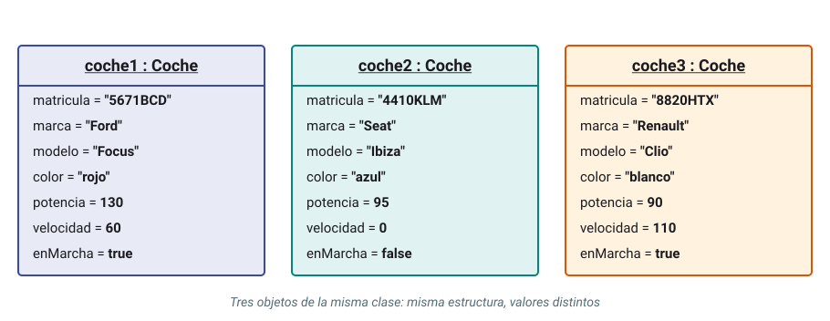

3. Clases y objetos en UML¶
El diagrama de clases es el diagrama más importante de UML y la base del resto: describe las clases de un sistema, lo que guardan, lo que pueden hacer y cómo se relacionan. En este capítulo aprenderás a dibujar y leer una clase y un objeto; en los siguientes, las relaciones entre ellos.
3.1. Lo que ya sabes de POO¶
En el curso de POO viste que:
- Una clase es la plantilla que describe objetos con la misma estructura y comportamiento: sus atributos (lo que sabe) y sus métodos (lo que hace).
- Un objeto es una instancia de una clase, con su propia identidad y con valores concretos en sus atributos.
- Los atributos suelen ser privados y los servicios, públicos (encapsulación).
UML da una forma estándar de dibujar todo eso. Usaremos la clase Coche del primer capítulo de POO.
3.2. La clase en UML¶
Una clase se dibuja como un rectángulo dividido en tres compartimentos:
| Compartimento | Contiene | Ejemplo |
|---|---|---|
| Superior | El nombre de la clase | Coche |
| Central | Los atributos | -velocidad : int |
| Inferior | Las operaciones (métodos) | +acelerar(incremento : int) : void |
classDiagram
class Coche {
-totalCoches : int$
-matricula : String
-marca : String
-modelo : String
-color : String
-potencia : int
-velocidad : int
-enMarcha : boolean
+ponerEnMarcha() void
+parar() void
+acelerar(incremento : int) void
+frenar(decremento : int) void
+getVelocidad() int
+pintar(color : String) void
+getTotalCoches() int$
}@startuml
skinparam classAttributeIconSize 0
class Coche {
- {static} totalCoches : int
- matricula : String
- marca : String
- modelo : String
- color : String
- potencia : int
- velocidad : int
- enMarcha : boolean
+ ponerEnMarcha() : void
+ parar() : void
+ acelerar(incremento : int) : void
+ frenar(decremento : int) : void
+ getVelocidad() : int
+ pintar(color : String) : void
+ {static} getTotalCoches() : int
}
@enduml
Reglas del nombre:
- Empieza por mayúscula y suele escribirse en singular y en formato CamelCase:
Coche,PlazaGaraje. - Es un sustantivo que identifica un concepto del problema, no una acción (
Coche, noConducir). - Debe ser el mismo que se usará en el código.
3.3. Atributos¶
Un atributo se escribe con esta sintaxis; solo son obligatorios el nombre y, en la práctica, el tipo:
visibilidad nombre : tipo [multiplicidad] = valorInicial {propiedades}
| Parte | Significado | Ejemplo |
|---|---|---|
| visibilidad | Quién puede acceder (+ - # ~, ver 3.5) |
- |
| nombre | Identificador, en camelCase | velocidad |
| tipo | Tipo de dato | int, String, double, boolean |
| multiplicidad | Cuántos valores guarda (opcional) | [0..*] |
| valorInicial | Valor con el que nace (opcional) | = 0 |
| propiedades | Condiciones entre llaves (opcional) | {readOnly} |
Algunos ejemplos de la clase Coche:
| Atributo en UML | Se lee como… | Java |
|---|---|---|
-velocidad : int = 0 |
Atributo privado entero que empieza en 0 | private int velocidad = 0; |
-matricula : String {readOnly} |
Atributo privado que no cambia tras asignarse | private final String matricula; |
-totalCoches : int (subrayado) |
Atributo de clase: uno para todos los coches | private static int totalCoches; |
+VELOCIDAD_MAXIMA : int = 220 {readOnly} |
Constante pública | public static final int VELOCIDAD_MAXIMA = 220; |
Atributos de clase y constantes
En UML los miembros static se escriben subrayados. Las constantes se marcan con {readOnly} (y por convención con el nombre en MAYÚSCULAS).
Atributos y relaciones
Un atributo cuyo tipo es otra clase del modelo (por ejemplo, Alquiler tiene un Vehiculo) normalmente no se escribe como atributo: se dibuja como una relación entre las dos clases. Lo verás en el capítulo 5.
3.4. Operaciones¶
Una operación (el método, visto desde el diseño) se escribe así:
visibilidad nombre(parámetro : tipo, ...) : tipoDeRetorno
| Operación en UML | Se lee como… | Java |
|---|---|---|
+acelerar(incremento : int) : void |
Pública, recibe un entero y no devuelve nada | public void acelerar(int incremento) |
+getVelocidad() : int |
Pública, sin parámetros, devuelve un entero | public int getVelocidad() |
+pintar(color : String) : void |
Pública, recibe un texto | public void pintar(String color) |
+getTotalCoches() : int (subrayada) |
Operación de clase | public static int getTotalCoches() |
Algunas convenciones útiles:
- Los constructores se pueden omitir o escribirse como
+Coche(matricula : String, ...). Muchos diagramas los omiten porque se deducen. - Los getters y setters suelen omitirse cuando no aportan información (a menudo se dibujan solo si son relevantes para el diseño).
- Una operación abstracta se escribe en cursiva (lo verás en el capítulo 7).
- Si el método no devuelve nada, se indica
void(o se omite el tipo de retorno).
3.5. Visibilidad¶
La visibilidad indica quién puede acceder a un atributo u operación. Se escribe con un símbolo delante del nombre:
| Símbolo | Visibilidad | Quién accede | Java |
|---|---|---|---|
+ |
Pública | Cualquier clase | public |
- |
Privada | Solo la propia clase | private |
# |
Protegida | La clase, su paquete y sus subclases | protected |
~ |
De paquete | Las clases del mismo paquete | (sin modificador) |
La regla habitual en diseño: atributos privados (-) y operaciones públicas (+), como pide la encapsulación. Si en un diagrama ves un atributo público (+velocidad : int), conviene preguntarse si es intencionado.
3.6. Niveles de detalle¶
Un diagrama no tiene por qué mostrarlo todo. Según para qué lo uses, enseñarás más o menos información de cada clase:
Vista general del sistema: qué clases hay.
classDiagram
class CocheQué datos guarda cada clase.
classDiagram
class Coche {
-matricula : String
-marca : String
-modelo : String
-velocidad : int
-enMarcha : boolean
}Diseño detallado, listo para implementar.
classDiagram
class Coche {
-matricula : String
-marca : String
-modelo : String
-velocidad : int
-enMarcha : boolean
+ponerEnMarcha() void
+parar() void
+acelerar(incremento : int) void
+frenar(decremento : int) void
+getVelocidad() int
}Regla práctica
Muestra solo lo necesario para que el diagrama cumpla su función. Un boceto para discutir con el equipo no necesita cada getter; un diagrama de diseño para otro programador, sí necesita los tipos y las visibilidades.
3.7. De Java a UML (y de vuelta)¶
Con la notación anterior, pasar de una clase Java a su cuadro UML es casi mecánico. Este es un resumen de la clase Coche:
public class Coche {
private static int totalCoches = 0;
private final String matricula;
private int velocidad;
private boolean enMarcha;
public Coche(String matricula, String marca, String modelo,
String color, int potencia) { /* ... */ }
public void acelerar(int incremento) { /* ... */ }
public int getVelocidad() { /* ... */ }
public static int getTotalCoches() { /* ... */ }
}
classDiagram
class Coche {
-totalCoches : int$
-matricula : String #123;readOnly#125;
-velocidad : int
-enMarcha : boolean
+acelerar(incremento : int) void
+getVelocidad() int
+getTotalCoches() int$
}| En Java | En UML |
|---|---|
| Nombre de la clase | Compartimento superior |
Campos (private int velocidad;) |
Compartimento central: -velocidad : int |
| Métodos | Compartimento inferior: +acelerar(incremento : int) : void |
private / public / protected |
- / + / # |
El tipo antes del nombre (int velocidad) |
El tipo después, tras dos puntos (velocidad : int) |
static |
Subrayado |
final |
{readOnly} |
Un detalle de orden
En Java el tipo va antes del nombre; en UML, después y separado por dos puntos. Es el error de notación más frecuente al empezar.
3.8. Interpretar una clase¶
Para leer una clase dibujada, recórrela en este orden:
- Nombre: ¿qué concepto representa?
- Atributos: ¿qué datos guarda y de qué tipo? ¿Alguno es de clase o constante?
- Operaciones: ¿qué servicios ofrece? ¿Cuáles son públicos y cuáles internos?
- Visibilidad: ¿respeta la encapsulación (atributos privados)?
Aplicado a Coche: es un concepto de la empresa de alquiler; guarda matrícula, marca, modelo, color, potencia, velocidad y si está en marcha, además de un contador de coches creados compartido por todos; ofrece operaciones para ponerlo en marcha, pararlo, acelerarlo, frenarlo, consultarlo y pintarlo; y respeta la encapsulación porque todos los atributos son privados.
3.9. Objetos e instanciación¶
Una clase es la plantilla; los objetos son las cosas concretas que se crean a partir de ella (instanciación, con new en Java). UML también sabe dibujarlos, con el diagrama de objetos: una «fotografía» de los objetos de un sistema en un instante dado, con los valores que tienen en ese momento.
Notación de un objeto¶
- Se dibuja como un rectángulo con dos compartimentos.
- El nombre se escribe subrayado con la forma
nombreObjeto : NombreClase. - En el segundo compartimento aparecen los atributos con su valor actual (
atributo = valor).
Si el nombre del objeto no importa, se puede escribir solo : Coche (objeto anónimo).
Este diagrama muestra el resultado de ejecutar el PruebaCoches del curso de POO, con tres coches de la misma clase:

Coche coche1 = new Coche("5671BCD", "Ford", "Focus", "rojo", 130);
Coche coche2 = new Coche("4410KLM", "Seat", "Ibiza", "azul", 95);
Coche coche3 = new Coche("8820HTX", "Renault", "Clio", "blanco", 90);
coche1.ponerEnMarcha();
coche1.acelerar(60);
coche3.ponerEnMarcha();
coche3.acelerar(110);
@startuml
object "coche1 : Coche" as coche1 {
matricula = "5671BCD"
marca = "Ford"
modelo = "Focus"
color = "rojo"
potencia = 130
velocidad = 60
enMarcha = true
}
object "coche2 : Coche" as coche2 {
matricula = "4410KLM"
marca = "Seat"
modelo = "Ibiza"
color = "azul"
potencia = 95
velocidad = 0
enMarcha = false
}
@enduml
Fíjate en cómo se relacionan el diagrama de clases y el de objetos:
| Diagrama de clases | Diagrama de objetos | |
|---|---|---|
| Describe | La plantilla: estructura general | Objetos concretos en un instante |
| Atributos | Nombre y tipo (velocidad : int) |
Nombre y valor (velocidad = 60) |
| Nombre | Coche |
coche1 : Coche (subrayado) |
| Es válido… | Siempre | Solo en ese momento |
| Sirve para | Diseñar el sistema | Ilustrar un ejemplo, explicar un estado, depurar |
Cuando haya relaciones entre clases (capítulo 5), el diagrama de objetos mostrará también los enlaces entre los objetos concretos.
Resumen del capítulo¶
- Una clase se dibuja con tres compartimentos: nombre, atributos y operaciones.
- Atributo:
visibilidad nombre : tipo = valorInicial {propiedades}. Operación:visibilidad nombre(parámetros) : tipoRetorno. - Visibilidad:
+pública,-privada,#protegida,~de paquete. Lo habitual: atributos privados y operaciones públicas. - Lo estático se subraya y las constantes se marcan con
{readOnly}. - El nivel de detalle depende de la finalidad del diagrama.
- Un objeto se dibuja como
nombre : Clase(subrayado) con los valores de sus atributos: es un diagrama de objetos, una fotografía de un instante.
Actividades¶
Actividad 1. Interpreta este diagrama y responde:
classDiagram
class Camion {
-matricula : String #123;readOnly#125;
-cargaMaxima : double
-velocidad : int
+MAX_VEL : int
+acelerar(incremento : int) void
+getCargaMaxima() double
+costeAlquiler(dias : int) double
}- ¿Cuántos atributos tiene y cuántos son privados?
- ¿Hay algún atributo que no respete la encapsulación?
- ¿Qué atributo no puede cambiar una vez asignado?
- ¿Qué operación devuelve un número decimal y qué recibe?
- ¿Cómo se escribiría
getCargaMaximaen Java?
Solución
- Cuatro atributos; tres son privados (
matricula,cargaMaxima,velocidad). - Sí:
+MAX_VEL : intes público. Sería aceptable si fuera una constante, pero no está marcada como{readOnly}, así que conviene revisarlo. matricula, por tener{readOnly}.costeAlquiler, que recibe un enterodiasy devuelve undouble.public double getCargaMaxima().
Actividad 2. Dibuja el diagrama de la siguiente clase Java (en draw.io o con PlantUML):
public class PlazaGaraje {
private final String codigo;
private boolean ocupada;
public PlazaGaraje(String codigo) { /* ... */ }
public String getCodigo() { /* ... */ }
public boolean isOcupada() { /* ... */ }
public void ocupar() { /* ... */ }
public double costeAlquiler(int dias) { /* ... */ }
}
Solución
@startuml
skinparam classAttributeIconSize 0
class PlazaGaraje {
- codigo : String {readOnly}
- ocupada : boolean
+ getCodigo() : String
+ isOcupada() : boolean
+ ocupar() : void
+ costeAlquiler(dias : int) : double
}
@enduml
El resultado equivale a:
classDiagram
class PlazaGaraje {
-codigo : String #123;readOnly#125;
-ocupada : boolean
+getCodigo() String
+isOcupada() boolean
+ocupar() void
+costeAlquiler(dias : int) double
}El constructor se ha omitido, como es habitual.
Actividad 3. Dibuja el diagrama de objetos que resulta de ejecutar este código, con los valores de los atributos de cada objeto (matricula, color, velocidad, enMarcha):
Coche a = new Coche("5671BCD", "Ford", "Focus", "rojo", 130);
Coche b = new Coche("4410KLM", "Seat", "Ibiza", "azul", 95);
a.ponerEnMarcha();
a.acelerar(60);
b.pintar("verde");
Solución
@startuml
object "a : Coche" as a {
matricula = "5671BCD"
color = "rojo"
velocidad = 60
enMarcha = true
}
object "b : Coche" as b {
matricula = "4410KLM"
color = "verde"
velocidad = 0
enMarcha = false
}
@enduml
El objeto a está en marcha a 60 km/h; el objeto b sigue parado, pero ha cambiado de color. Son dos objetos de la misma clase con estados distintos.
Actividad 4. Este diagrama contiene cuatro errores de notación o de diseño. Encuéntralos y corrígelos:
classDiagram
class coche {
+velocidad : int
matricula String
-enMarcha : boolean
+acelerar : void
}Solución
- El nombre de la clase debe empezar por mayúscula:
Coche. +velocidad : intes un atributo público, lo que rompe la encapsulación: debe ser-velocidad : int.matricula Stringno sigue la notación UML: falta la visibilidad y los dos puntos. Correcto:-matricula : String.+acelerar : voidparece un atributo porque le faltan los paréntesis y el parámetro. Correcto:+acelerar(incremento : int) : void.
Diagrama corregido:
classDiagram
class Coche {
-velocidad : int
-matricula : String
-enMarcha : boolean
+acelerar(incremento : int) void
}